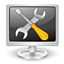

System
Grundlagen¶
Administrator
 Benutzer zu Administratoren des Systems machen
Benutzer zu Administratoren des Systems machen Notfall
Was tun in Notfällen? Desktop
Aussehen und Verhalten der graphischen Oberfläche anpassen Paketverwaltung
Software installieren und verwaltenShell
Keine Angst vor der KommandozeileHomeverzeichnis - hier werden alle benutzereigenen Daten gespeichert
Benutzer und Gruppen - Benutzer und Gruppen im System verwalten
Dienste - z.B. Druckdienst, FTP-Server, SSH-Zugang
Informationen zu einem Befehl - vielfältige Informationen zu einem Befehl ermitteln
Dokumentation - Dokumentation über das System anzeigen
Rechte - Rechte von Dateien und Ordnern ändern
Systeminformationen ermitteln - Informationen zum eigenen System sammeln
Systemzeit - Konfiguration und Synchronisation der Systemzeit
Dateisystem und Datenträger¶
Partitionierung
Einteilung einer FestplatteDatenträger - Grundlegendes über Datenträger
Datenverwaltung - Grundlegendes zu Geräten, Datenträgern und Dateisystemen unter Linux
Dateisystem - Erklärung verschiedener Dateisysteme
dosfstools - Programme zum anlegen, formatieren, überprüfen, reparieren sowie verwalten von MS-DOS- bzw. FAT-Dateisystemen
ext - Einführung in ext-Dateisysteme
Das Btrfs Dateisystem
- Artikelserie zum Btrfs-DateisystemVerzeichnisstruktur - Wozu dienen die Verzeichnisse, auf die Ubuntu sich verteilt?
opt - Das Verzeichnis /opt für Zusatzprogramme
Formatieren - einen Datenträger oder Partition formatieren
Dateisystemgröße ändern - die Größe eines Dateisystems (Partition) ändern
Upgrade auf ext4 - ein ext3-Dateisystem nach ext4 konvertieren
Dateisystemcheck - Überprüfung des Dateisystems ändern
Datenrettung - u.a. versehentlich gelöschte Daten retten
Diskette formatieren - Wie formatiert man eine Diskette?
inotify - Weiterentwicklung von dnotify mit erweitertem Funktionsumfang
Festplattenbelegung - Analyse der Festplattenbelegung
Defragmentierung von Daten und mögliche Lösungen
fstab - der Aufbau der Datei /etc/fstab
Home umziehen - Homeverzeichnis auf eine andere Partition verlegen
Laufwerksverwaltung - Überprüfen und Verwalten der Laufwerke und Partitionen
MTP - Tablets und Smartphones über das Media Transfer Protokoll einhängen
NTFS - NTFS-Partitionen unter Linux einbinden und bearbeiten
Quota - Programm zur Speichereinschränkung
Software-RAID - Partitionen redundant auf mehrere Festplatten verteilen für mehr Sicherheit vor Datenverlust
RAM-Disk erstellen - Teil des Arbeitsspeichers als Datenträger nutzen
Swap - eine Swapdatei oder -partition anlegen
UUID - eine eindeutige Identifikationsnummer, die jedes Linux-Dateisystem besitzt
Ubuntu umziehen - Anleitung, wie man Ubuntu auf eine neue Festplatte umzieht
ZFS on Linux - ein Dateisystem für Fortgeschrittene
zRam - zusätzlichen Swap im Arbeitsspeicher (RAM) anlegen
Systemstart und -ende¶

at - Befehle zu bestimmter Zeit ausführen
Automount - wenn Automount nicht funktioniert
BootChart - den Bootvorgang analysieren
Bootvorgang - Grundlagen zum Rechnerstart
Bootoptionen - Beschreibung wichtiger Kerneloptionen und deren Anwendung
Cron - zeitgesteuerte Ausführung von Prozessen
e4rat - Beschleunigung des Startvorgangs
GNOME Schedule - Oberfläche zur zeitgesteuerten Ausführung von Prozessen
GRUB 2 - alle Informationen zu GRUB 2, dem aktuellen Bootloader von Ubuntu
GRUB - Informationen zu Grub Legacy ("GRUB 1"), dem Bootloader bis einschließlich Ubuntu 8.04
Herunterfahren - zeitgesteuertes Herunterfahren des Systems
Magic SysRQ - ein "eingefrorenes" System kontrolliert herunterfahren
Nummernblock aktivieren - den Nummernblock beim Systemstart einschalten
Plymouth - Bootsplash-Programm ab Ubuntu 10.04
rc.local - eigene Befehle in den Bootvorgang integrieren
systemd - Standard-Init-System ab Ubuntu 15.04
Upstart - Standard-Init-System bis Ubuntu 14.10
Kernel und Treiber¶
Firmware Test Suite - "Gesundheitscheck" für BIOS und Kernel
Kernel - Informationen zum Linux Kernel und zum Echtzeitkernel
Kernelmodule - Umgang mit Kernelmodulen
Kernel/Kompilierung - einen eigenen Kernel bauen
Mainline-Kernel - den unmodifizierten Linux-Kernel für Ubuntu nutzen
DKMS - Kernelmodule automatisiert für neue Kernel bauen und installieren
module-assistant - im Kernel nicht vorhandene Module nachinstallieren
restricted-manager - eingeschränkte ("restricted") Module (de)aktivieren
Überwachung¶
Festplattenschutz - automatischen Schutz der Festplatte (HDAPS) aktivieren, primär für Lenovo ThinkPad Laptops
Festplattenstatus - mit SMART den Festplattenstatus überprüfen
Fsniper - Verzeichnisse auf neue Dateien hin überwachen, um dann bestimmte Anweisungen auszuführen
KDE Energieverwaltung - Batterieladezustand und Prozessortaktung unter KDE überwachen (ab Ubuntu 9.04)
Lm sensors - diverse Infos über die CPU auslesen
Logdateien - Logdateien und der Umgang mit Logs
Prozesse
Prozesse anzeigen und beeinflussen Specto - Änderungen überwachen
syslog-ng - Eine Weiterentwicklung von Syslog mit erweitertem Funktionsumfang
ttyload - Systemload graphisch auf einer Textkonsole ausgeben
Munin - Rechnerüberwachung mit der Möglichkeit, eine Vielzahl von Rechnern zu überwachen
USV
Hilfsprogramme zur Konfiguration von unterbrechungsfreien Stromversorgungen unter UbuntuZeitgeist - Dienst, welcher Benutzeraktivitäten im Hintergrund aufzeichnet
Optimierung¶
Benchmarks
Geschwindigkeits- und Performance-MessungenBleachbit - Das System auf überflüssige Dateien prüfen und bereinigen
Caffeine - automatisierte Abschaltung der Energiesparfunktionen
cpulimit - CPU-Zeit eines Prozesses begrenzen
DupeGuru - doppelte Dateien suchen und Löschen
fslint - doppelte Dateien oder leere Dateien suchen, temporäre Dateien löschen etc.
laptop-mode-tools - die Taktfrequenz, Taktfrequenzwechsel etc. einer CPU anpassen und konfigurieren
schedutils - fortgeschrittene Methoden zur Beeinflussung von Prozessen
Energiesparmodi mit ACPI - Wissensartikel über Suspend-to-RAM und Suspend-to-Disk
pam time - Login auf den Rechner in Abhängigkeit von Zeit und Tag einschränken
pm-utils - zuständig für die Energiesparmodi
PowerTOP - den Energieverbrauch des Systems analysieren, Vorhersagen zu Akkulaufzeit, Tipps zu Optimierung
Phoronix Test Suite - Benchmarksuite für Leistungsmessungen
Prelink - das System mit Prelink tunen
preload - häufig benötigte Programme vorab ins RAM laden
Prozessortaktung - Taktfrequenz der CPU prüfen und manuell anpassen
Redshift - Tageszeitbedingt die Farbtemperatur des Monitors automatisch anpassen
Strom sparen - Stromspartipps für Notebooks, besonders mit ATI-Grafik und Pentium-M-Prozessor
Sweeper - Das System auf überflüssige Dateien untersuchen und bereinigen
Tuning - Ubuntu feintunen
uswsusp - Energiesparmodi im Userspace (alternative Methode)
vmstat - erste Analyse von Engpässen
xcalib - Monitor-Kalibrierung und Farbanpassung
Sonstiges¶
64bit-Architektur - "64 bit" erklärt
Alternativen-System - Standardprogramme und Programm-Alternativen konfigurieren
Bildschirmschoner - Bildschirmschoner einrichten
chroot - Wechsel des Wurzelverzeichnis
command-not-found - Paketvorschläge bei Aufruf von nicht installierten Programmen erhalten
D-Bus - Framework zur Kommunikation zwischen verschiedenen Programmen
Fontmanager - Schriftarten im System betrachten und vergleichen
Gerätemanager - Informationen über das System anzeigen lassen
Lüftersteuerung - Steuerung der Lüfterdrehzahlen
MIME-Typ - Deklaration und Erkennung von Dateiinhalten
Multicore - Probleme mit Mehrkern Prozessoren beheben oder Kerne gezielt abschalten
Schriften - alles über die Installation zusätzlicher Schriftarten
Schriftunterstützung - asiatische, arabische und andere Schriftzeichen verwenden
Soundausgabe Systemlautsprecher - akustische Informationen ausgeben
SSH - die sichere Art der Fernadministration
Mosh - ein auf SSH aufsetzendes Programm zur Fernadministration
Ansible - Automatisierungs-Werkzeug zur Orchestrierung, allgemeinen Konfiguration und Administration von Computern
Timekpr - Benutzungszeiten für einzelne Benutzer festlegen
Umgebungsvariable - alles zu Umgebungsvariablen
f.lux Monitor dimmen - Anpassen der Farbe des Monitors
- Erstellt mit Inyoka
-
 2004 – 2017 ubuntuusers.de • Einige Rechte vorbehalten
2004 – 2017 ubuntuusers.de • Einige Rechte vorbehalten
Lizenz • Kontakt • Datenschutz • Impressum • Serverstatus -
Serverhousing gespendet von